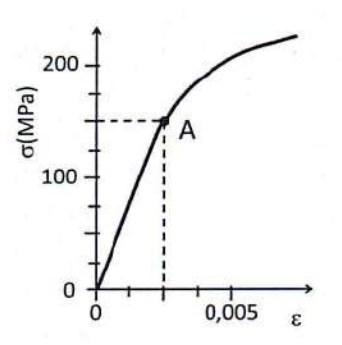

Unidad 1 - Ensayo en materiales - Problemas PAU - 24/25¶
Problema 1¶
Durante un ensayo de tracción de una probeta de 40 mm² de sección y 25#0 mm de longitud, al aplicarle una carga de 10000 N, se mide un alargamiento de 0,05 cm dentro del campo elástico. Calcule la tensión y el alargamiento unitario al aplicar la carga.
Problema 1 - solución
Datos:
- Sección: \(S = 40 \text{ mm}^2 = 40 \times 10^{-6} \text{ m}^2\)
- Longitud inicial: \(L_0 = 250 \text{ mm} = 0,25 \text{ m}\)
- Carga: \(F = 10000 \text{ N}\)
- Alargamiento: \(\Delta L = 0,05 \text{ cm} = 0,5 \text{ mm} = 5 \times 10^{-4} \text{ m}\)
a) Tensión (\(\sigma\)):
b) Alargamiento unitario (\(\varepsilon\)):
Problema 2¶
En un ensayo de tracción efectuado a una probeta cilíndrica se ha obtenido el diagrama tensión-deformación que se representa en la figura, donde el punto A señala el límite elástico.

Determinar:
a) El módulo de elasticidad.
b) El alargamiento de la probeta si se aplica una carga de 20000 N, sabiendo que su diámetro es 25 mm y su longitud 75 mm.
c) La carga máxima que soporta esta probeta sin deformarse permanentemente.
Problema 2 - solución
Datos del diagrama (deducidos de la figura típica PAU):
- Punto A (límite elástico): \(\sigma_e = 250 \text{ MPa}\), \(\varepsilon_e = 0,00125\)
- Carga aplicada: \(F = 20000 \text{ N}\)
- Diámetro: \(d = 25 \text{ mm} \Rightarrow S = \frac{\pi \cdot 25^2}{4} = 490,87 \text{ mm}^2\)
- Longitud: \(L_0 = 75 \text{ mm}\)
a) Módulo de elasticidad (\(E\)):
En la zona elástica (ley de Hooke): \(E = \frac{\sigma}{\varepsilon}\)
b) Alargamiento para F = 20000 N:
Como \(\sigma < \sigma_e\) (\(40,74 \text{ MPa} < 250 \text{ MPa}\)), está en zona elástica.
c) Carga máxima sin deformación permanente:
Es la carga correspondiente al límite elástico:
Problema 3¶
En un laboratorio se pretende realizar un ensayo de dureza Brinell y otro de dureza Vickers para una misma muestra de acero:
a) Determinar la expresión normalizada de la dureza Brinell si en el ensayo se obtiene una huella de 2,5 mm de diámetro aplicando una carga de 725 kp con un penetrador de 5 mm de diámetro durante 20 segundos.
b) Determinar la expresión normalizada de la dureza Vickers si en el ensayo se emplea una punta piramidal aplicando una carga de 120 kp durante 10 segundos y se obtiene como resultado una huella con diagonales de 1,25 mm y 1,23 mm.
Problema 3 - solución
a) Dureza Brinell:
Fórmula: \(HB = \frac{2F}{\pi \cdot D \cdot (D - \sqrt{D^2 - d^2})}\)
Datos: \(F = 725 \text{ kp}\), \(D = 5 \text{ mm}\), \(d = 2,5 \text{ mm}\), \(t = 20 \text{ s}\)
Expresión normalizada: \(\boxed{138 \text{ HB } 5/725/20}\)
b) Dureza Vickers:
Fórmula: \(HV = \frac{1,8544 \cdot F}{d^2}\) donde \(d = \frac{d_1 + d_2}{2}\) (media de diagonales)
Datos: \(F = 120 \text{ kp}\), \(d_1 = 1,25 \text{ mm}\), \(d_2 = 1,23 \text{ mm}\), \(t = 10 \text{ s}\)
Expresión normalizada: \(\boxed{145 \text{ HV } 120/10}\)
Problema 4¶
Un ensayo de tipo Brinell que se realiza sobre un determinado metal da como resultado una dureza de 80 HB. La bola utilizada como penetrador es de 5 mm de diámetro y la huella que se obtiene al cabo de 30 s es de 2 mm de diámetro. Se pide:
a) La carga que se ha aplicado en el ensayo expresada en Newtons.
b) La constante de ensayo del material.
c) Expresar la dureza en su forma normalizada.
Problema 4 - solución
Datos: \(HB = 80\), \(D = 5 \text{ mm}\), \(d = 2 \text{ mm}\), \(t = 30 \text{ s}\)
a) Carga aplicada (\(F\)):
Despejando de la fórmula de Brinell:
b) Constante de ensayo (\(k\)):
c) Expresión normalizada:
(Nota: En la normalización suele redondearse la carga a valores estándar)
Problema 5¶
Para medir la resiliencia de un material mediante un ensayo Charpy se ha utilizado una probeta de sección cuadrada de 10 mm de lado, con una entalla en forma de V de 2 mm de profundidad. La resiliencia obtenida fue de 220 J/cm² dejando caer un martillo de 35 kg desde una altura de 150 cm. Se pide:
a) Calcular la altura a la que se elevará el martillo tras golpear y romper la probeta.
b) Si el martillo fuera de 20 kg de masa y se hubiera soltado desde una altura de 1,75 m, determinar la energía sobrante tras el impacto.
Problema 5 - solución
Datos:
- Sección cuadrada: \(a = 10 \text{ mm} \Rightarrow S_0 = 100 \text{ mm}^2\)
- Entalla: 2 mm de profundidad \(\Rightarrow\) sección en la entalla: \(S = 8 \text{ mm} \times 10 \text{ mm} = 80 \text{ mm}^2 = 0,8 \text{ cm}^2\)
- Resiliencia: \(K = 220 \text{ J/cm}^2\)
- Masa martillo: \(m = 35 \text{ kg}\)
- Altura inicial: \(h_0 = 150 \text{ cm} = 1,5 \text{ m}\)
Energía absorbida por la probeta:
Energía inicial del martillo:
a) Altura final (\(h_1\)):
Energía sobrante: \(E_{sobr} = E_0 - E_{abs} = 514,5 - 176 = 338,5 \text{ J}\)
b) Con \(m = 20\) kg y \(h_0 = 1,75\) m:
Energía sobrante: \(E_{sobr} = 343 - 176 = \boxed{167 \text{ J}}\)
Problema 6¶
En un ensayo Brinell se emplea una bola de 2,5 mm de diámetro y se aplica una carga que produce una huella de 1,2 mm de diámetro. La constante de ensayo para este material es 30 kp/mm². Se pide:
a) Determinar la carga aplicada en el ensayo y calcular la dureza Brinell del material.
b) Si se usara una bola de 5 mm de diámetro, ¿cuál sería el diámetro de la huella?
Problema 6 - solución
Datos: \(D = 2,5 \text{ mm}\), \(d = 1,2 \text{ mm}\), \(k = 30 \text{ kp/mm}^2\)
a) Carga aplicada y dureza Brinell:
Relación de Brinell: \(F = k \cdot D^2 = 30 \cdot 2,5^2 = 30 \cdot 6,25 = \boxed{187,5 \text{ kp}}\)
b) Con \(D = 5\) mm, manteniendo \(k = 30\):
Carga: \(F = k \cdot D^2 = 30 \cdot 25 = 750 \text{ kp}\)
Para mantener la misma dureza HB (mismo material), el diámetro de huella debe cumplir:
Problema 7¶
A una varilla cilíndrica de latón de 10 mm de diámetro y 1 m de largo se le aplica una fuerza de tracción hasta su rotura. Su límite elástico es 250 MPa, el módulo de Young 120 GPa y el diámetro a la rotura 6,1 mm. Se pide:
a) Determinar si la varilla sufrirá una deformación permanente cuando se le aplique una fuerza de 2000 N.
b) Calcular su alargamiento unitario para una fuerza de 1000 N.
c) Calcular la estricción a la rotura.
Problema 7 - solución
Datos:
- Diámetro: \(d_0 = 10 \text{ mm} \Rightarrow S_0 = \frac{\pi \cdot 10^2}{4} = 78,54 \text{ mm}^2\)
- Longitud: \(L_0 = 1 \text{ m} = 1000 \text{ mm}\)
- \(\sigma_e = 250 \text{ MPa}\), \(E = 120 \text{ GPa} = 120000 \text{ MPa}\)
- Diámetro rotura: \(d_r = 6,1 \text{ mm}\)
a) ¿Deformación permanente con \(F = 2000\) N?
Como \(\sigma = 25,46 \text{ MPa} < \sigma_e = 250 \text{ MPa}\)
b) Alargamiento unitario para \(F = 1000\) N:
c) Estricción a la rotura:
Problema 8¶
En una empresa de fabricación de estructuras metálicas, se realiza un ensayo de tracción con la finalidad de verificar el cumplimiento con la normativa de vigas de acero. Para ello, se aplica una carga de 2000 N a una probeta de dicho material con un diámetro de 12 mm y una longitud inicial de 100 mm. Considerando un límite elástico de 225 MPa, se pide:
a) Determinar si la barra experimentará deformación permanente tras retirar la carga aplicada.
b) Calcular el módulo de elasticidad considerando un alargamiento total de 0,008 mm.
c) Determinar el diámetro mínimo para que dicha probeta no registre una deformación permanente al duplicar la carga aplicada.
Problema 8 - solución
Datos: \(F = 2000 \text{ N}\), \(d = 12 \text{ mm} \Rightarrow S = \frac{\pi \cdot 12^2}{4} = 113,1 \text{ mm}^2\), \(L_0 = 100 \text{ mm}\), \(\sigma_e = 225 \text{ MPa}\), \(\Delta L = 0,008 \text{ mm}\)
a) ¿Deformación permanente?
Como \(17,68 \text{ MPa} < 225 \text{ MPa}\):
b) Módulo de elasticidad:
c) Diámetro mínimo para \(F = 4000\) N sin deformación permanente:
Problema 9¶
En el aula taller de Tecnología e Ingeniería II, un grupo de estudiantes está desarrollando un proyecto de montaje de un ensayo Charpy. Se conoce que la resiliencia del material que se va a utilizar para el ensayo es de 30 J/cm² y que la probeta de sección cuadrada es de 10 mm de lado con una entalla de 2 mm. Además, quieren soltar el péndulo desde una altura de 2 m para que llegue, después de golpear la probeta, justo a la bandeja de los rotuladores de la pizarra que está a 1 m de altura. Responder a las siguientes cuestiones:
a) ¿Qué masa deberá de tener el martillo del péndulo que golpeará la probeta para conseguir el objetivo?
b) Si cambiamos el martillo por uno de 10 kg, ¿a qué altura llegaría después de golpear la probeta?
Problema 9 - solución
Datos: \(K = 30 \text{ J/cm}^2\), sección cuadrada \(a = 10 \text{ mm}\), entalla 2 mm \(\Rightarrow S = 8 \times 10 = 80 \text{ mm}^2 = 0,8 \text{ cm}^2\), \(h_0 = 2 \text{ m}\), \(h_1 = 1 \text{ m}\)
Energía absorbida:
a) Masa del martillo:
b) Con \(m = 10\) kg, altura final:
Problema 10¶
En un laboratorio de control de calidad se realiza un ensayo Charpy a una probeta de acero estructural con una sección cuadrada de 10 mm de lado utilizando un péndulo de 20 kg de masa. El péndulo parte de una altura inicial de 1,2 m y, tras impactar con la probeta, alcanza una altura final de 30 cm. Se pide:
a) Calcular la energía absorbida por la probeta.
b) Determinar la resiliencia del material.
c) En caso de utilizar un péndulo de 18 kg de masa, ¿desde qué altura debería dejarse caer para alcanzar la misma altura final una vez rota la probeta?
Problema 10 - solución
Datos: \(a = 10 \text{ mm}\), entalla estándar \(\Rightarrow S = 0,8 \text{ cm}^2\) (asumiendo entalla de 2 mm), \(m = 20 \text{ kg}\), \(h_0 = 1,2 \text{ m}\), \(h_1 = 0,3 \text{ m}\)
a) Energía absorbida:
b) Resiliencia:
c) Con \(m = 18\) kg, misma altura final (0,3 m):
Para misma energía absorbida (misma probeta, misma resiliencia):
Problema 11¶
Para fabricar una herramienta se compran dos planchas de acero con distintas durezas. La dureza normalizada de la primera plancha es 700 HV 25 y la de la segunda es 120 HB 5 250 30. Se pide:
a) Calcular la diagonal de la huella del ensayo Vickers en la primera plancha.
b) Determinar la profundidad de la huella producida en el ensayo Brinell de la segunda plancha.
Problema 11 - solución
Datos:
- Plancha 1: \(700 \text{ HV } 25\) → \(F = 25 \text{ kp}\), \(HV = 700\)
- Plancha 2: \(120 \text{ HB } 5 \text{ } 250 \text{ } 30\) → \(D = 5 \text{ mm}\), \(F = 250 \text{ kp}\), \(t = 30 \text{ s}\), \(HB = 120\)
a) Diagonal huella Vickers:
b) Profundidad huella Brinell:
De la fórmula de Brinell, hallamos \(d\) (diámetro huella):
Relación geométrica en la esfera (profundidad de penetración):